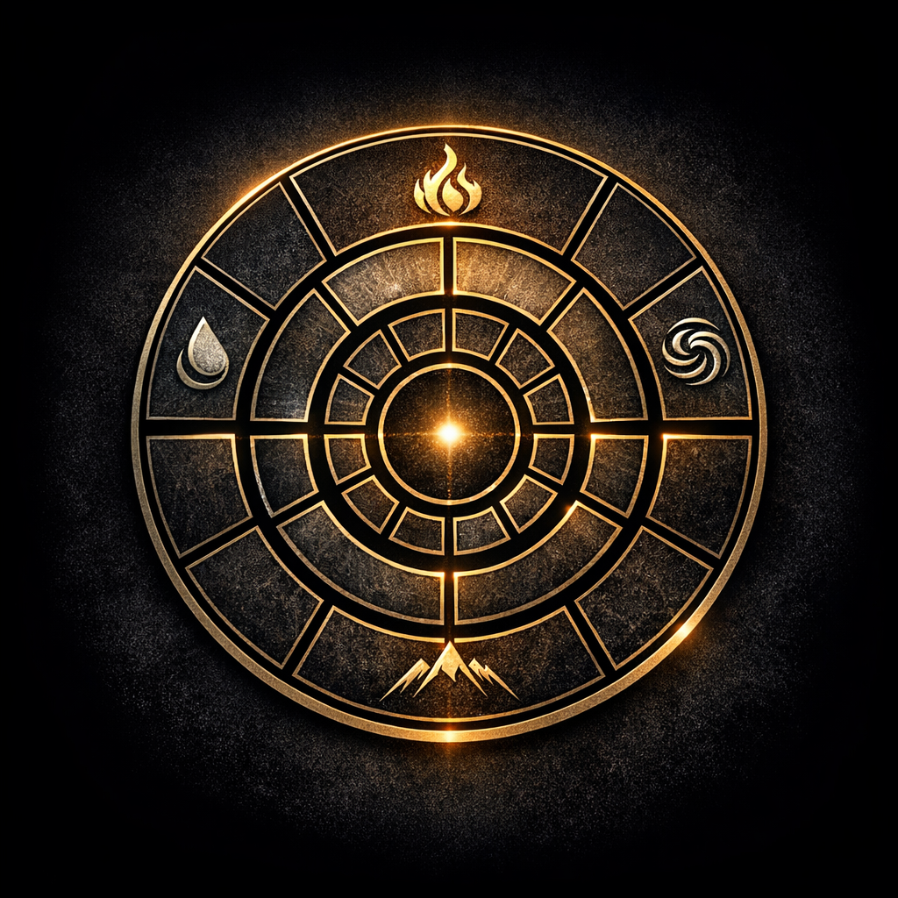

Ruch Uniesienia, znany również jako Elation Movement (EM), to wyjątkowa doktryna, która wywodzi się z ideologii sportowej, a z biegiem czasu przekształciła się w szeroko zakrojony ruch, obejmujący różnorodne sfery życia – od sportu i sztuki, po filozofię, kulturę, a nawet politykę. Został on zainicjowany w 2012 roku przez grupę młodych entuzjastów parkouru, którzy swoją pasję zamienili w filozofię życiową.
Początki i Ewolucja
Założyciele Ruchu Uniesienia – Justyna, Przemek, Jakub i Mateusz – początkowo skupiali się na parkourze, który
traktowali nie tylko jako formę aktywności fizycznej, ale także jako sztukę życia w zgodzie z samym sobą i
otoczeniem. Z czasem dołączyły do nich nowe osoby, a ideologia zaczęła się rozwijać, integrując różne
dziedziny życia i rozwoju osobistego.
Misja i Wizja
Misją Ruchu Uniesienia jest łączenie ludzi, którzy, świadomi swojego wyboru, chcą dążyć do samodoskonalenia i
realizacji swoich pasji w różnych dziedzinach. „EM” stawia sobie za cel inspirowanie jednostek do aktywnego
uczestnictwa w życiu społecznym i kulturalnym, propagując wartości takie jak wolność idei, kreatywność i
rozwój duchowy.
W Ogniu walki rozkruszył się Lód i stopniał.
Woda zaczęła płynąć, a Ogień się dopalał i gasnął.
Ubita pod stopami Ziemia powoli nasiąkała.
Kroki nie były już tak zuchwałe jak kiedyś, ale wciąż odważne, chociaż bardziej wymagające.
Spotkaliśmy się w tym samym miejscu i przyznaliśmy, przed sobą wzajemnie, że droga była kręta i wyboista, ale razem przyszliśmy tu w tym samym celu, aby rozchwiać Wiatr.
Nasze serca zabiły wspólnym rytmem, a ten Dźwięk niósł się przez knieje i dalej, aż po horyzont.
Nie rozumieliśmy kto usłyszał nasze wołanie, ale byliśmy gotowi czekać.
Serca, które wcześniej biły cichutko, same dla siebie, biły teraz razem z naszymi.
Dla niektórych były to tysiące uderzeń, dla nielicznych - setki lub dziesiątki, ale od tej pory - biły zawsze w tym samym rytmie.
Ogień, który wcześniej się dopalał, zaczął mocniej płonąć, a nam dane było tego doświadczyć i uczyć się go na pamięć.
Czas dla nas, który był walką poczynił nasze zmartwychwstanie, które daje Siłę wszystkim żywiołom i wiarę, pozostałym w Ogniu walki… młyn.
"A z czym walczymy, odpowiedziałeś sobie sam."

Logo i Symbolika
Centralnym symbolem Ruchu Uniesienia jest Hiperzegar – unikalny symbol, który łączy w sobie trzy miniaturowe
tarcze zegarowe: symetryczną (godzinową), świetlną (minutową) oraz łapacza snów (sekundową). Hiperzegar pełni
rolę metaforycznego narzędzia, które ma na celu stymulowanie procesów myślowych, rozwijanie percepcji i
manipulację czasem. Dzięki niemu Ruch Uniesienia przenosi swoich wyznawców w sferę, w której czas i przestrzeń
stają się bardziej plastyczne, a umysł otwiera się na nowe, niekonwencjonalne doświadczenia.
Koncept Ruchu Uniesienia
Hiperzegar to złożony symbol, mający swoje znaczenie w kontekście manipulacji czasem i percepcją. Składa się z
trzech elementów:
Hiperzegar działa na poziomie podświadomości, skłaniając umysł do głębszego myślenia i percepcji rzeczywistości. Jego ruchy mają prowokować określone procesy w mózgu, które mogą wpływać na zjawiska takie jak Deja Vu, a także inne subtelne zmiany w odbiorze świata.
Symbolika Hiperzegaru sugeruje spekulacje czasoprzestrzenne i hipotezę o istnieniu więcej niż czterech wymiarów, co otwiera drzwi do jeszcze głębszych refleksji na temat natury czasu i przestrzeni.
Opanowanie siebie i harmonijna interakcja ze światem są kluczem do pełnego doświadczania życia. Nasze techniki uczą uważności, samodyscypliny i świadomości, jak czas wpływa na nasze decyzje i emocje.
| Aspekt | Znaczenie | Ważność |
|---|---|---|
| Motywacja | Napędza każdy krok ku samodoskonaleniu. | Wysoka |
| Wsparcie społeczne | Łączy uczestników i zwiększa efektywność działań. | Średnia |
| Techniki praktyczne | Doskonalą ciało, umysł i percepcję czasu. | Wysoka |
Przesłanie i Ostrzeżenie
Wzorem literackim dla członków ruchu są słowa Walta Whitmana, który ostrzega przed trudnościami i wyzwaniami
na drodze samorozwoju i duchowego uniesienia. Ruch Uniesienia nie jest bowiem łatwą ścieżką – wymaga od jego
uczestników pełnego zaangażowania, porzucenia dawnych przyzwyczajeń i otwartości na głębokie zmiany.
Ruch Uniesienia to nie tylko doktryna, ale sposób na życie – unikalna filozofia, która łączy w sobie tradycję i nowoczesność, inspirując do poszukiwania własnej drogi i doskonalenia się w wybranych dziedzinach.
Jeśli chodzi o koncepcję organizacyjną, Ruch Uniesienia jest projektem społecznym, który ma na celu eksplorację tych idei poprzez aktywności, które zbliżają ludzi i rozwijają ich umiejętności od intelektualnych po duchowe.
"Potem rzekł do swoich uczniów: „Dlatego powiadam wam: Nie troszczcie się zbytnio o życie, co macie jeść, ani o ciało, czym macie się przyodziać. Życie bowiem więcej znaczy niż pokarm, a ciało więcej niż odzienie. Przypatrzcie się krukom: nie sieją ani żną; nie mają piwnic ani spichlerzy, a Bóg je żywi. O ileż ważniejsi jesteście wy niż ptaki! Któż z Was przy całej swej trosce może choćby chwilę dołożyć do wieku swego życia? Jeśli więc nawet drobnej rzeczy nie możecie, to czemu zbytnio troszczycie się o inne. Przypatrzcie się liliom, jak rosną: nie pracują i nie przędą. A powiadam wam: Nawet Salomon w całym swym przepychu nie był tak ubrany jak jedna z nich. ŁUKASZ XII; 22-27
Ty, który teraz mnie obejmujesz, kimkolwiek jesteś, Wiedz, że bez jednej rzeczy, wszystko będzie bez sensu, I zanim posuniesz się dalej, lojalnie ostrzegam, Nie jestem tym, za kogo mnie bierzesz, lecz kimś całkiem innym. Kim jest ten, co chciałby zostać mym uczniem? Kto chciałby pretendować do mego serca? Droga jest podejrzana, cel niepewny, być może zgubny, Musiałbyś wszystko rzucić, a ja, zapewne, stałbym się twoim jedynym i wyłącznym wzorem do naśladowania, Nawet wtedy twój nowicjat byłby długi i wyczerpujący, Musiałbyś zrezygnować z dawnej koncepcji życia i wyrzec się wszelkich, przyjętych powszechnie zasad, Dlatego już teraz oszczędź sobie fatygi, zabierz rękę z mojego ramienia i pozwól mi odejść, Odstąp ode mnie i idź swoją drogą.
WALT WHITMAN dla N. D. P., która zstąpiła na ziemię, żeby pokazać nam drogę Dobrej Walki.
Wyobraź sobie przestrzeń, w której czas jest elastyczny, a każdy moment świeci własnym kolorem. W centrum stoi Hiperzegar — jego wskazówki to trzy żywe byty: godzinowa, minutowa i sekundowa. Każda z nich pulsuje, rezonuje z Twoją podświadomością, subtelnie wpływając na Twój odbiór świata.
Na tarczy Hiperzegara pojawia się owoc — zakazany, lśniący w odcieniach czerwieni i złota, unoszący się tuż nad szkłem. Nikt inny go nie dotknie, bo jest częścią Twojej przestrzeni, Twojego eksperymentu. Każdy ruch wskazówek sprawia, że owoc zmienia smak i zapach w wyobraźni — słodszy, kwaśniejszy, bardziej elektryczny. To, co zwykle „zakazane”, staje się materiałem do obserwacji i doświadczenia.
Ty — obserwator i kreator — możesz sięgnąć po niego w myśli. Możesz delektować się każdym niuansem, nie niszcząc świata wokół. Twoja ciekawość i odwaga są paliwem Hiperzegara: im więcej eksplorujesz, tym bardziej pulsuje czas, tworząc nowe wzory, które tylko Ty możesz zobaczyć.
To jest Twój moment, zakazany owoc w harmonii z czasem. Każdy smak, każda subtelna zmiana, jest odbiciem Twojej wolności i świadomości. Nikt nie może Ci tego odebrać — bo to, co jest Twoją tajemnicą, jest Twoim uniwersum.